x <- 5
y <- 8
x*y[1] 40$$
$$
In R we use +, -, *, and / for addition, subtraction, multiplication, and division, respectively, and ** or ^ for raising to a power.
x <- 5
y <- 8
x*y[1] 40If two numeric vectors are of the same length, these operators will work elementwise in this way:
x <- c(1,2,3)
y <- c(4,5,6)
x + y[1] 5 7 9y**x[1] 4 25 216If two numeric vectors are not of the same length, the entries of the shorter vector are “recycled”. It is important to pay attention to how this happens.
x <- c(0,1)
y <- c(1,2,3,4,5,6)
x + y[1] 1 3 3 5 5 7If the length of the longer vector is not a multiple of the length of the shorter vector a warning is issued:
x <- c(0,1)
y <- c(1,2,3,4,5)
x*yWarning in x * y: longer object length is not a multiple of shorter object
length[1] 0 2 0 4 0Let’s not forget the modulo operator %%. The expression x %% y will return the remainder from the division of x by y. This can come in very handily!
5 %% 3[1] 2x <- c(34,59)
y <- c(3,5)
x %% y[1] 1 4It is also handy to know the floor() and ceiling() functions, which round down and up, respectively:
a <- c(1.2,1.8,-2.1,5)
floor(a)[1] 1 1 -3 5ceiling(a)[1] 2 2 -2 5And then there is the round() function which rounds in the usual way (to the nearest whole number unless you supply a number of decimal places).
round(pi)[1] 3round(pi,3)[1] 3.142Here we learn how to obtain TRUE and FALSE values from logical comparisons as well as some ways we can put logical values to use.
In R we use >, >=, <, and <= for “\(>\)”, “\(\geq\)”, “\(<\)”, and “\(\leq\)”, respectively and == for “\(=\)” and != for \(\neq\). We will also use & and | for “and” and “or”.
A logical comparison will return a logical value, either TRUE or FALSE.
2 < 3[1] TRUE2 == 2[1] TRUE2 > 3[1] FALSE2 != 3[1] TRUEWe can ask if two conditions hold simultaneously with & and whether one or the other or both conditions hold with |:
x <- 1/2
(x >= 0) & (x < 1) # is x in the interval [0,1)?[1] TRUE(x < 0) | (x >= 1) # is x outside the interval [0,1)?[1] FALSE((x >= 0) & (x < 1)) | ((x >= 2) & (x < 3)) # is x in either of the intervals [0,1) or [2,3)?[1] TRUEWe can negate a logical value by putting ! in front of it:
!T[1] FALSE!FALSE[1] TRUE!(2 < 3)[1] FALSEFor character strings, the operators with inequalities in them compare the strings according to alphabetical order.
"cat" > "dog"[1] FALSE"cat" < "dog"[1] TRUE"cat" == "cat"[1] TRUE"cat" <= "cat"[1] TRUELogical operations can be used with vectors:
x <- 1:10
x <= 5 [1] TRUE TRUE TRUE TRUE TRUE FALSE FALSE FALSE FALSE FALSEThe values of the shorter vector are recycled just as with arithmetic operations:
x <- 1:10
y <- c(0,10)
x < y [1] FALSE TRUE FALSE TRUE FALSE TRUE FALSE TRUE FALSE FALSELogical operators can be used to access a subset of the entries of a vector which satisfy a condition:
x[x < y][1] 2 4 6 8The which() function tells us which entries of a logical vector are TRUE:
a <- c(2,7,4,5,9,2,0)
b <- c(1,3,4,6,5,9,2)
which(a > b)[1] 1 2 5which(a == b)[1] 3So we have two ways of subsetting values in a vector:
a[a>b][1] 2 7 9a[which(a>b)][1] 2 7 9We can replace certain values in a vector with other values using the above kind of indexing:
a[a>b] <- 0 # replace an entry of a with zero if it is greater than the corresponding entry of b
a[1] 0 0 4 5 0 2 0The functions any() and all() can be applied to logical vectors. The any() function will return TRUE if any value in the vector is TRUE and the all() function will return TRUE if all values in the vector are TRUE:
u <- c(-2.1,-3.9,-5.6)
any(u > 0)[1] FALSEall(u < 0)[1] TRUERecall that when logical values are coerced to numeric values, TRUE takes the value of \(1\) and FALSE takes the value of \(0\). If we use logical values in arithmetic calculations they will be automatically coerced to these numeric values:
T+T+T+T+T+F+F[1] 5(T+T)/(T+T+T)[1] 0.6666667Define a vector and replace values below zero with zero:
x <- c(-0.3,0.2,-0.2,0.3,1.1,-0.4)
x*(x > 0)[1] 0.0 0.2 0.0 0.3 1.1 0.0Set to zero values with absolute value not exceeding a threshold
thresh <- 0.5
x*(x < -thresh) + x*(x > thresh)[1] 0.0 0.0 0.0 0.0 1.1 0.0Suppose x contains several observations from a random sample. For example, Table 2.1 of Davison (2003) presents data collected during a study of the amount of time women spend giving birth. The first day of the study, which took place at a single hospital, resulted in the following times (in hours).
x <- c(10.00,7.30,8.50,4.25,16.00,9.50,10.40,6.40,9.75,2.10,19.00,5.60,8.75,8.90,10.40,3.40)The functions sum(), mean(), sd(), var(), min(), max(), and median() return the mean, standard deviation, variance, minimum, maximum, and median of a numeric vector:
sum(x)[1] 140.25mean(x)[1] 8.765625sd(x)[1] 4.296654var(x)[1] 18.46124min(x)[1] 2.1max(x)[1] 19median(x)[1] 8.825The length() function gives the length of a vector:
length(x)[1] 16The summary() function prints some of the above statistics as well as the 1st and 2rd quartiles:
summary(x) Min. 1st Qu. Median Mean 3rd Qu. Max.
2.100 6.200 8.825 8.766 10.100 19.000 The sort() function sorts the data:
sort(x) [1] 2.10 3.40 4.25 5.60 6.40 7.30 8.50 8.75 8.90 9.50 9.75 10.00
[13] 10.40 10.40 16.00 19.00sort(x,decreasing = TRUE) [1] 19.00 16.00 10.40 10.40 10.00 9.75 9.50 8.90 8.75 8.50 7.30 6.40
[13] 5.60 4.25 3.40 2.10The order() function gives the indices in the order needed to sort the data:
order(x) [1] 10 16 4 12 8 2 3 13 14 6 9 1 7 15 5 11x[order(x)] [1] 2.10 3.40 4.25 5.60 6.40 7.30 8.50 8.75 8.90 9.50 9.75 10.00
[13] 10.40 10.40 16.00 19.00The rank() function gives the position each value would have in the sorted vector:
rank(x) [1] 12.0 6.0 7.0 3.0 15.0 10.0 13.5 5.0 11.0 1.0 16.0 4.0 8.0 9.0 13.5
[16] 2.0Data will often come with missing values. Suppose that one of the time giving birth of one of the mothers was not recorded in the data. R encodes missing values as NA, so we might have the vector
y <- c(10.00,7.30,8.50,4.25,16.00,9.50,10.40,6.40,NA,2.10,19.00,5.60,8.75,8.90,10.40,3.40)Any function computed on a missing value results in another missing value:
mean(y)[1] NAMost basic statistics functions in R have an option to ignore any missing values. One adds to the function na.rm = TRUE, where rm stands for “remove”.
mean(y, na.rm = TRUE)[1] 8.7sd(y, na.rm = TRUE)[1] 4.439152Some functions ignore missing values by default, like the sort() function:
sort(y) [1] 2.10 3.40 4.25 5.60 6.40 7.30 8.50 8.75 8.90 9.50 10.00 10.40
[13] 10.40 16.00 19.00To check for missing values, one can use the is.na() function, which returns FALSE for non-missing values and TRUE for missing values.
is.na(y) [1] FALSE FALSE FALSE FALSE FALSE FALSE FALSE FALSE TRUE FALSE FALSE FALSE
[13] FALSE FALSE FALSE FALSEany(is.na(y))[1] TRUEAnother kind of missing value is coded by R as NaN, which stands for “not a number”. An NaN registers as missing by the is.na() function. Note that there is also a is.nan() function:
0/0[1] NaNis.na(0/0)[1] TRUEis.nan(0/0)[1] TRUEis.nan(NA)[1] FALSEOne can also get Inf or -Inf, but these are not treated as missing values or non-numbers:
1/0[1] Inf-1/0[1] -Infis.na(1/0)[1] FALSEis.nan(1/0)[1] FALSEOne can replace missing values in a vector with some other value by subsetting the vector with is.na():
y[is.na(y)] <- -99 # replace missing values with the value -99
y [1] 10.00 7.30 8.50 4.25 16.00 9.50 10.40 6.40 -99.00 2.10
[11] 19.00 5.60 8.75 8.90 10.40 3.40Lastly, a quick way to remove NA values from a vector is to use the na.omit() function:
vals <- c(1,2,3,NA,5)
na.omit(vals)[1] 1 2 3 5
attr(,"na.action")
[1] 4
attr(,"class")
[1] "omit"We may wish to compute the mean or some other statistic on each column or row of a matrix. We can do this most easily with the apply() function.
For example:
X <- matrix(1:24,8,3,byrow=T)
X [,1] [,2] [,3]
[1,] 1 2 3
[2,] 4 5 6
[3,] 7 8 9
[4,] 10 11 12
[5,] 13 14 15
[6,] 16 17 18
[7,] 19 20 21
[8,] 22 23 24apply(X,1,sum) # row sums[1] 6 15 24 33 42 51 60 69apply(X,2,sum) # column sums[1] 92 100 108apply(X,1,max) # row maxima[1] 3 6 9 12 15 18 21 24apply(X,2,sd) # column standard deviations[1] 7.348469 7.348469 7.348469If we apply mean(), sd(), var(), min(), max(), or median() to an entire matrix, the function will put all the values in the matrix into a single vector before computing the result.
mean(X)[1] 12.5mean(as.vector(X))[1] 12.5We can similarly apply functions to an array:
A <- array(dim=c(8,3,2))
A[,,1] <- X
A[,,2]<- -X
A, , 1
[,1] [,2] [,3]
[1,] 1 2 3
[2,] 4 5 6
[3,] 7 8 9
[4,] 10 11 12
[5,] 13 14 15
[6,] 16 17 18
[7,] 19 20 21
[8,] 22 23 24
, , 2
[,1] [,2] [,3]
[1,] -1 -2 -3
[2,] -4 -5 -6
[3,] -7 -8 -9
[4,] -10 -11 -12
[5,] -13 -14 -15
[6,] -16 -17 -18
[7,] -19 -20 -21
[8,] -22 -23 -24apply(A,c(1,2),mean) # average across slices [,1] [,2] [,3]
[1,] 0 0 0
[2,] 0 0 0
[3,] 0 0 0
[4,] 0 0 0
[5,] 0 0 0
[6,] 0 0 0
[7,] 0 0 0
[8,] 0 0 0apply(A,c(1,3),mean) # average across columns [,1] [,2]
[1,] 2 -2
[2,] 5 -5
[3,] 8 -8
[4,] 11 -11
[5,] 14 -14
[6,] 17 -17
[7,] 20 -20
[8,] 23 -23apply(A,c(2,3),mean) # average across rows [,1] [,2]
[1,] 11.5 -11.5
[2,] 12.5 -12.5
[3,] 13.5 -13.5R has several plotting functions for visualizing data.
For a sample of numeric values, such as the times giving birth, one can make a histogram (although this sample is a little too small for a histogram to be able to show the shape of the distribution):
hist(x)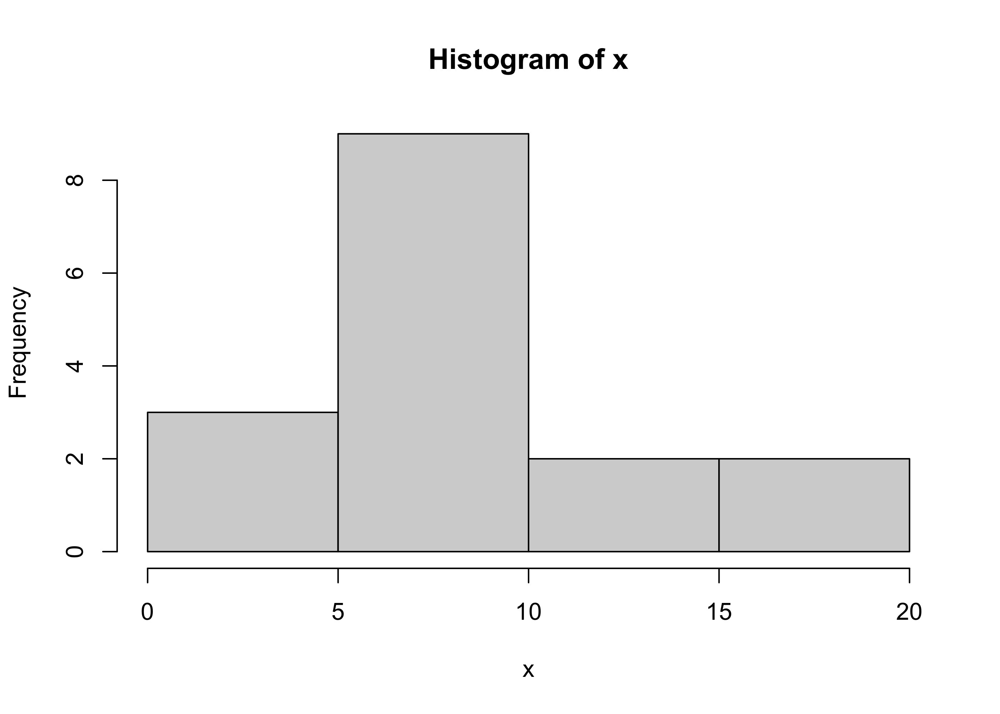
hist(x,breaks=10) # change the number of bins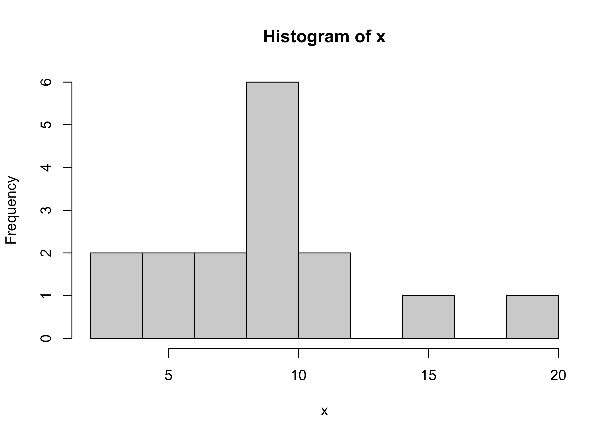
The plot() function can be used to plot just about anything.
If we use the plot function on a vector of numbers, its values are plotted against the integers starting from 1 and going up to the length of the vector (the indices).
plot(x)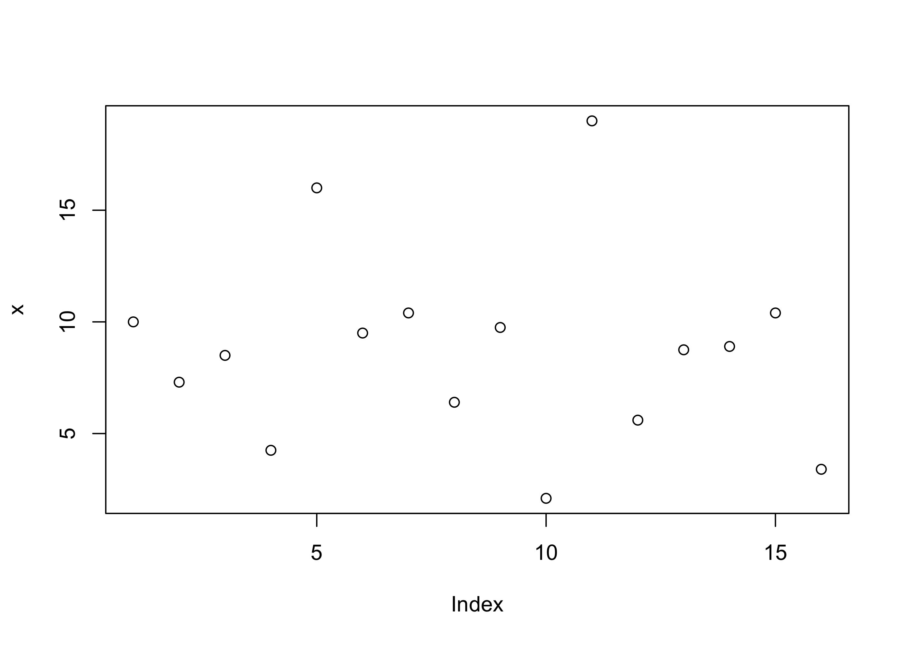
We can make a scatterplot like this:
x <- c(0.91, 0.11, -0.34, 0.91, -1.30, 0.15, 0.16, -1.04, 0.66, -2.06, 1.69, 1.78, -0.07, 1.80, -1.68, -0.65, 1.00, 0.14, -1.62, 0.87)
y <- c(2.11, 2.19, -1.42, 1.05, -2.77, 1.91, -0.81, 0.12, -0.69, -3.83, 2.68, 2.43, 0.59, 0.53, -2.02, -0.24, -0.18, 1.48, -0.62, 0.92)
plot(y~x)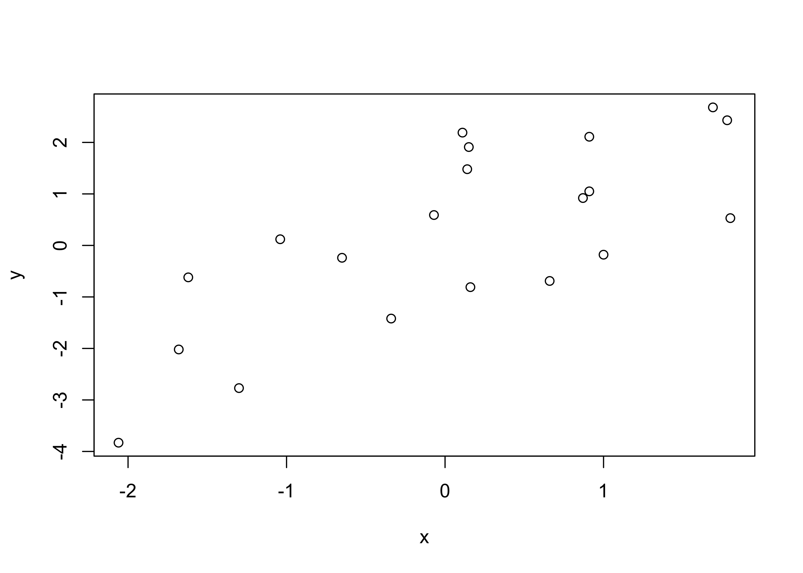
plot(x,y) # two ways of getting the same plot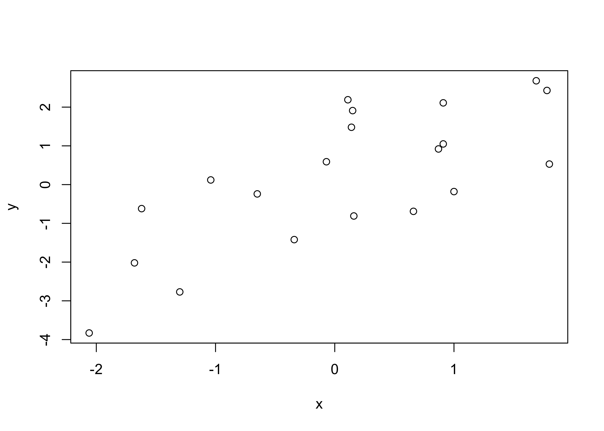
plot(y,x) # whichever you put first goes on the horizontal axis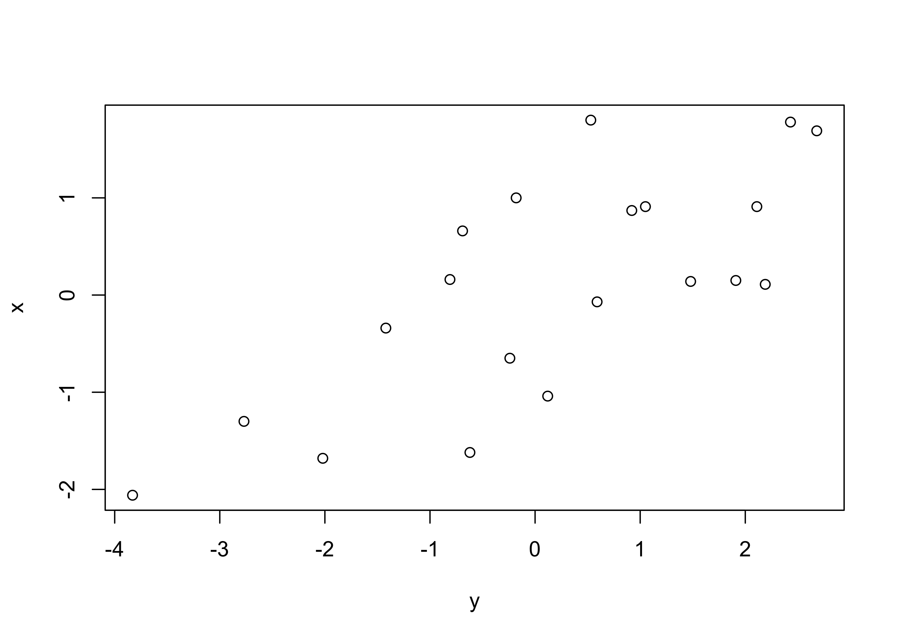
We can set some plotting options with the par() function prior to running the plot() command as well as add some options to the plot() function to customize it. After the plotting command, more can be added to the plot, for example additional axis labels with the axis() function, etc.
par(cex = .8, # change size of font in plots
mar = c(4.1,4.1,4.1,5.1) # set the margins of the plot (lower,left,upper, right)
)
plot(y~x,
bty="l", # type of box drawn around plot
pch = 19, # plotting symbol
col = "red",
cex = 1.5, # size of symbols plotted
xlab = "Label for the horizontal axis",
ylab = "Label for the vertical axis",
main = "Plot title",
xlim = c(-3,2), # set limits of horizontal axis
ylim = c(-5,3) # set limits of vertical axis
)
axis(side = 4, # side = 4 is the right side
at = seq(-4,4,by = 2), # where the tick marks should be
las = 2) # option to make the text horizontal instead of vertical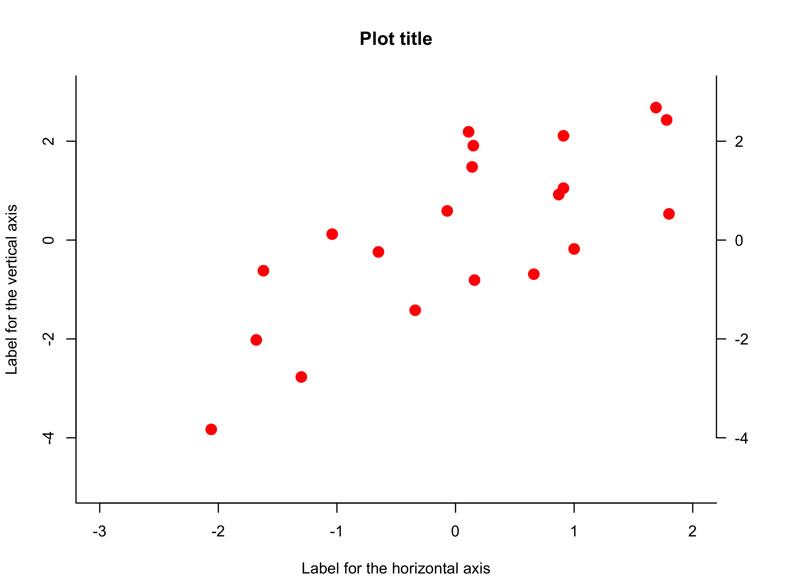
We can plot lines or curves as follows:
x <- seq(-2*pi,2*pi,by = 0.01) # make a dense sequence of x values
y <- sin(x) # evaluate a function a each value of x
plot(y~x, type = "l") # specify type = "l" to connect the points in the scatterplot with line segments
We can add points or lines to an existing plot with the points() or the lines() functions. We can also add a legend with the legend() function:
plot(y~x,
type = "l",
xaxt = "n")
x0 <- pi*c(-4:4)/2
# customize x axis labels
axis(side = 1, at = x0, labels = paste(c(-4:4)/2,"\u03c0",sep = ""))
points(x = x0, # give vector of x values
y = sin(x0), # give vector of y values
pch = 15, # specify plotting symbol
col = rgb(1,0,0,.5)) # red/green/blue/opacity function for making cool colors!!
lines(cos(x)~x,
col = "blue",
lty = 4) # specify line type
legend(x = -2*pi, # x position of upper left corner of legend box
y = -.25, # y position of upper left corner of legend box
col = c("black","blue",rgb(1,0,0,.5)), # colors
pch = c(NA,NA,15), # symbols
lty = c(1,4,NA), # line types
legend = c("sine(x)","cosine(x)","point of interest"), # text in legend
bty = "n") # don't put legend on a solid, bordered box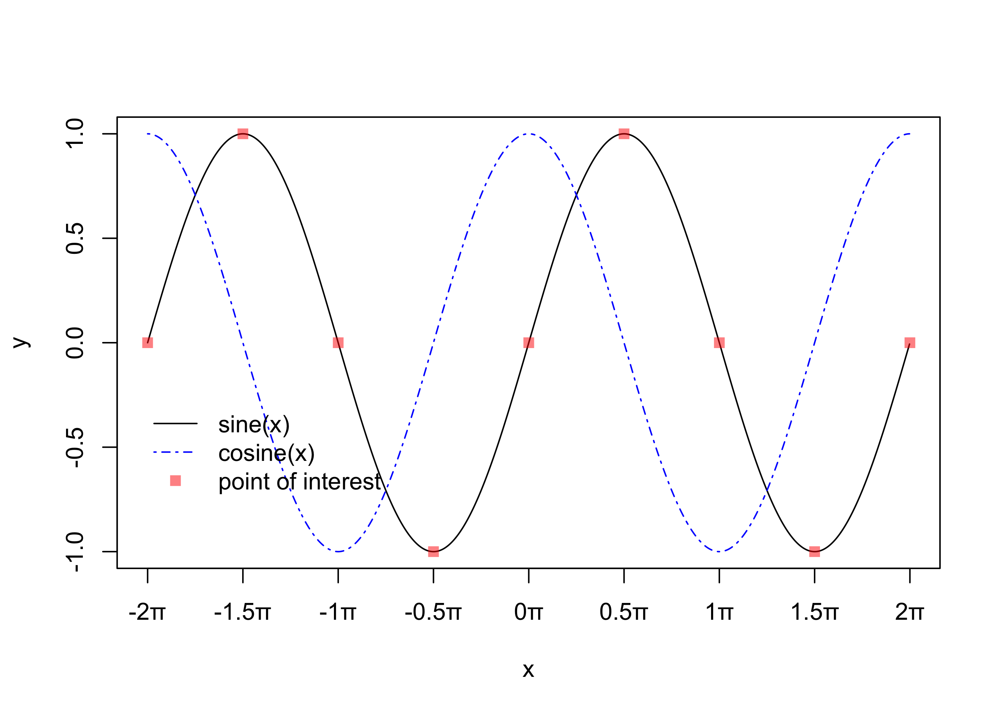
Sometimes it is useful to set up an empty plot and add to this. Use plot(NA,...) and specify some options. The following code demonstrates the abline() function and the polygon() function, as well as the text() function for adding text in the middle of the plot somewhere.
plot(NA,
xlim = c(-1,1),
ylim = c(-1,1),
xlab = "", # put no label on x axis
xaxt = "n", # suppress plotting of x axis
yaxt = "n",
ylab = "", # no yaxis label,
bty = "n", # no border around the plot
xaxs = "i", # do not add extra "padding" beyond limits given in xlim
yaxs = "i", # do not add extra "padding" beyond limits given in ylim
asp = 1 # set y/x aspect ratio equal to 1 (so a 45 degree line will really be at 45 degrees)
)
# abline is for plotting straight lines
abline(h = 0, lty = 3, col = "lightgray") # a horizontal line at height 0
abline(0,1) # a line with intercept 0 and slope 1
abline(v = 0, lty = 3, col = "lightgray") # a vertical line at height 0
# polygon fills a polygon based on given (x,y) coordinates of the corners.
polygon(x = c(0,1/2,1/2,0), # x coordinates
y = c(0,0,1/2,0), # y coordinates
col = rgb(0,1,0,.5), # color
border = NA) # suppress border of polygon
# draw a single line segment
lines(x = c(0,-1/2),
y = c(0,1/2),
col = "red")
# add text to the plot
text(x = -1/2,
y = 1/2,
pos = 4, # place text to the right of the specified point
label = "hello?",
font = 3) # in italics
# add text to the plot
text(x = 1,
y = 1,
pos = 4, # place text to the right of the specified point
label = "are you there?",
font = 3,
xpd = NA) # xpd = NA make things show up even if they are located outside of the plotting window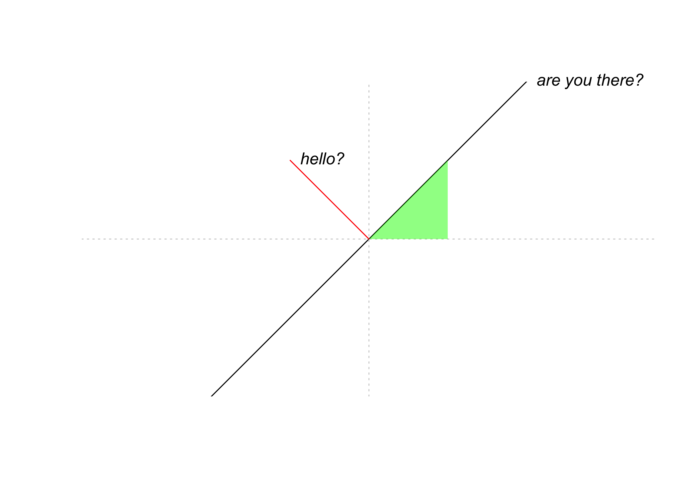
We can make plots with multiple panels in a couple of ways. One is to specify an mfrow= in the par() function. We can also add text anywhere in the margin with the mtext() function:
par(mfrow = c(1,2)) # makes a 1 by 2 table of plots.
plot(y~x,type = "l")
plot(x~y, type = "l")
mtext(outer = T, # put text in the outer margin,which is the margin outside the entire multi-paneled figure.
side = 3, # upper side
text ="Two plots!", # the text
line = -2,# line of outer margin on which to put this. Can use a negative number to bring it inside the plot, as by default, the outer margins are set to have width zero
font = 2) # make bold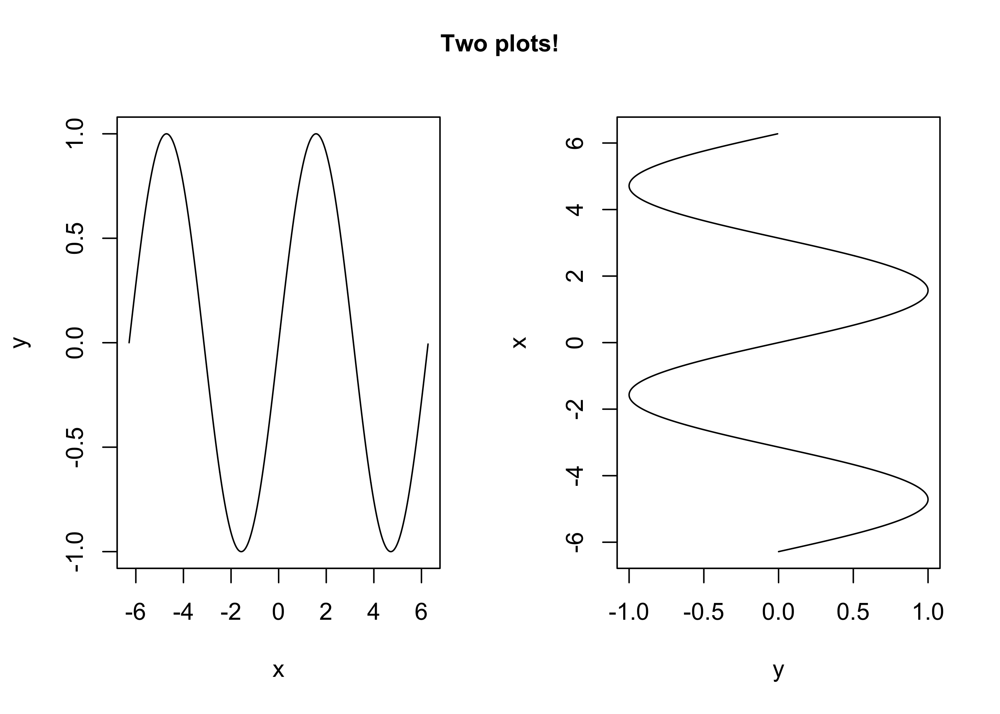
Another way is to use the layout() function. One has to define a matrix, as below:
M <- matrix(c(1,2,3,3),byrow = T, nrow = 2)
M [,1] [,2]
[1,] 1 2
[2,] 3 3layout(M)
# first plot will be in upper left,
# second in upper right,
# third all along the bottom
plot(y~x, type = "l", bty = "7")
plot(x~y, type = "l", bty = "c")
plot(1:20,pch = 1:20, main = "20 plotting symbols", bty = "l")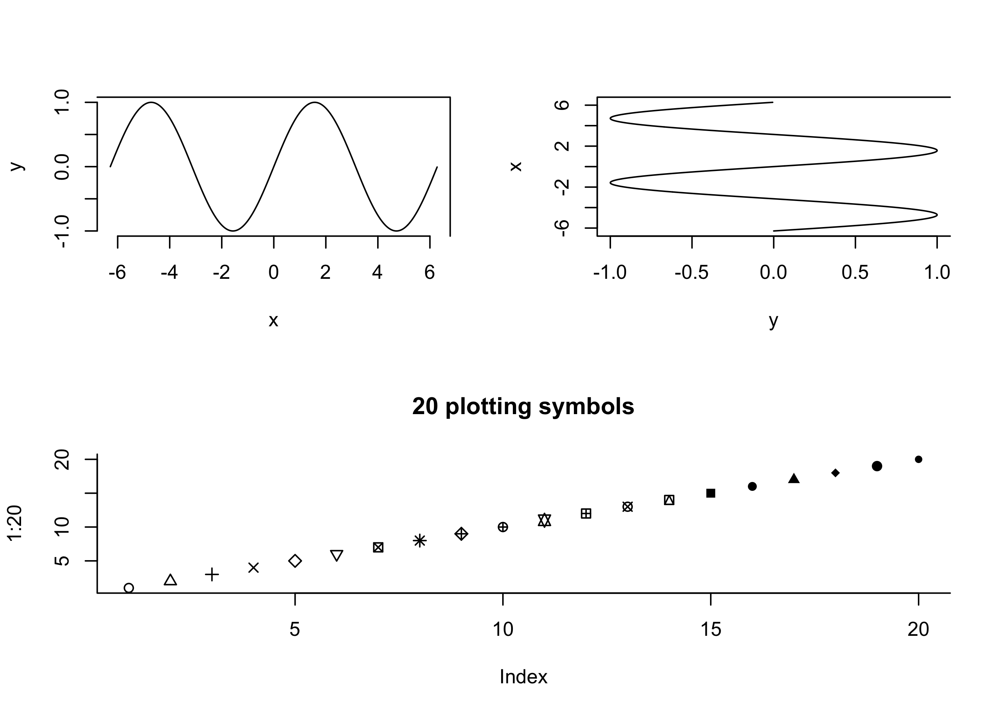
To learn more about any of these functions, just run ?plot, ?layout etc., in the console.
Practice writing code and anticipating the output of code with the following exercises.
[1] 2 -4 6 -8 10 -12 14 -16 18 -20 22 -24x, write a condition such that x[<cond>] will keep only the even numbers in x.surnames <- c("Omlin","Garabedian","King","Ayres","Cuniowski","Tyner","Reebel","Moran","Maglione","Dow","Capps")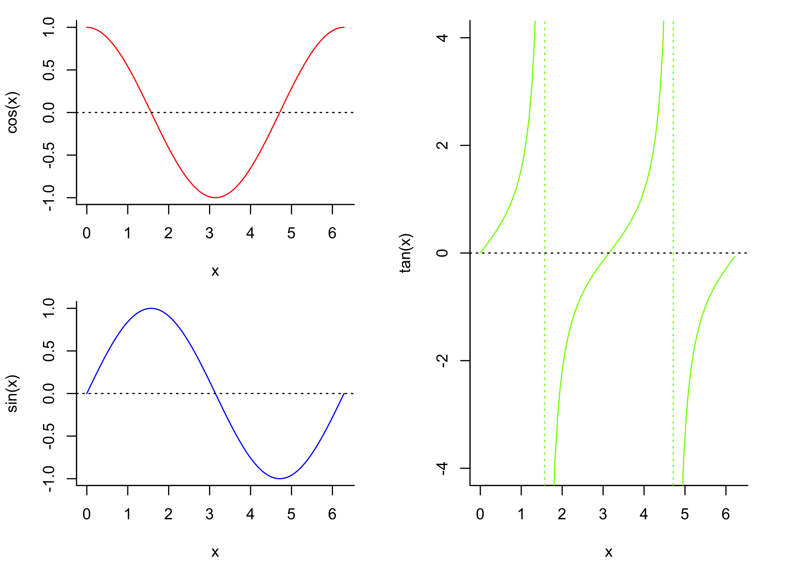
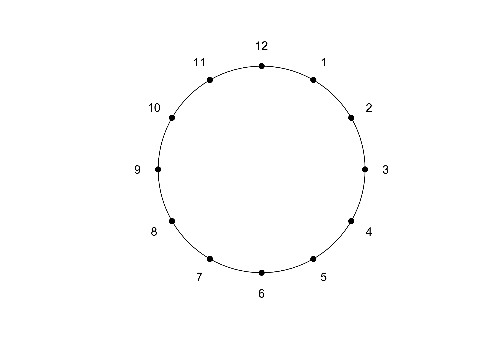
Anticipate the output of the following code chunks:
a <- c(2,3,-5,6,8,-9)
b <- c(2,8,-3,6,-1,8)
(a < 0) & (b > 0)a <- c(2,3,-5,6,8,-9)
b <- c(T,F,T,F,T,F)
which(a < b)sec <- 124
a <- floor(sec / 60)
b <- sec %% 60
paste(sec," seconds is ",a," minutes and ",b," seconds", sep="")plot(NA,
xlim=c(-1,1),
ylim = c(-1,1),
asp = 1,
bty = "n")
th <- seq(0,2*pi,length=9) - pi/8
x <- cos(th)
y <- sin(th)
polygon(x = x, y= y, col = "red", border = NA)
text(0,0,labels = "STOP",col = "white",cex = 3)x <- seq(-4,4,by = 0.01)
y <- (x-2)*(x+2)
plot(y~x,type = "l")
abline(h = 0, lty = 3, col = "red")
abline(v = c(-2,2),lty = 3, col = "blue")